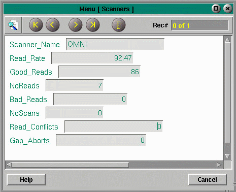

Scanner Statistics displays the total number of reads for a configurable period of time. Also shown are the number of Good Reads, No Reads, Bad Reads, No Scans, Read Conflicts and Gap Aborts. The Read Rate is calculated and displayed below the Scanner Name. Use the buttons to advance to the next or previous scanner record.

Copyright © 2001 Fortna Inc. All rights reserved.